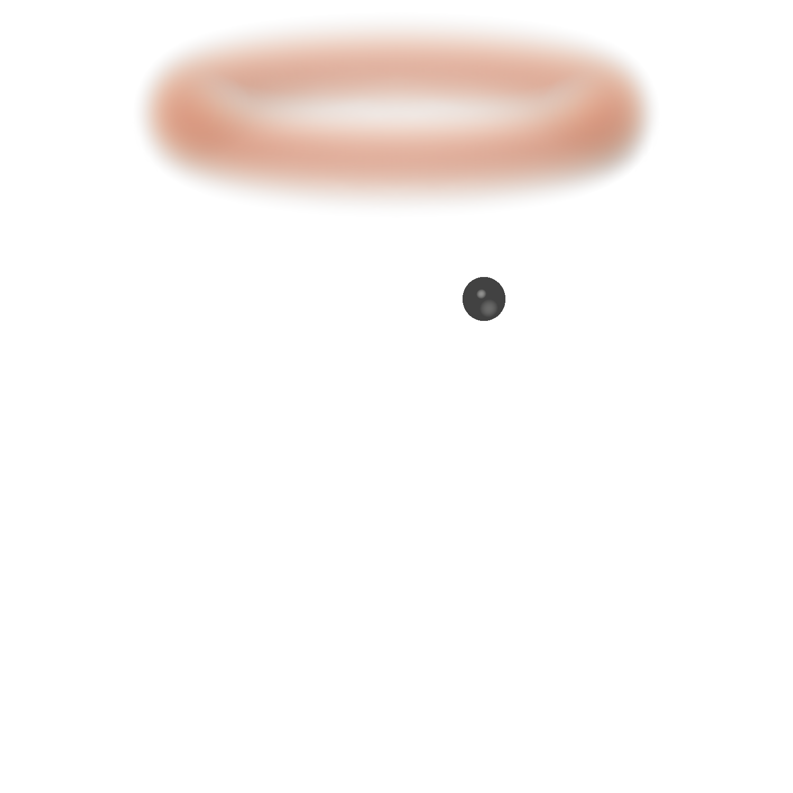
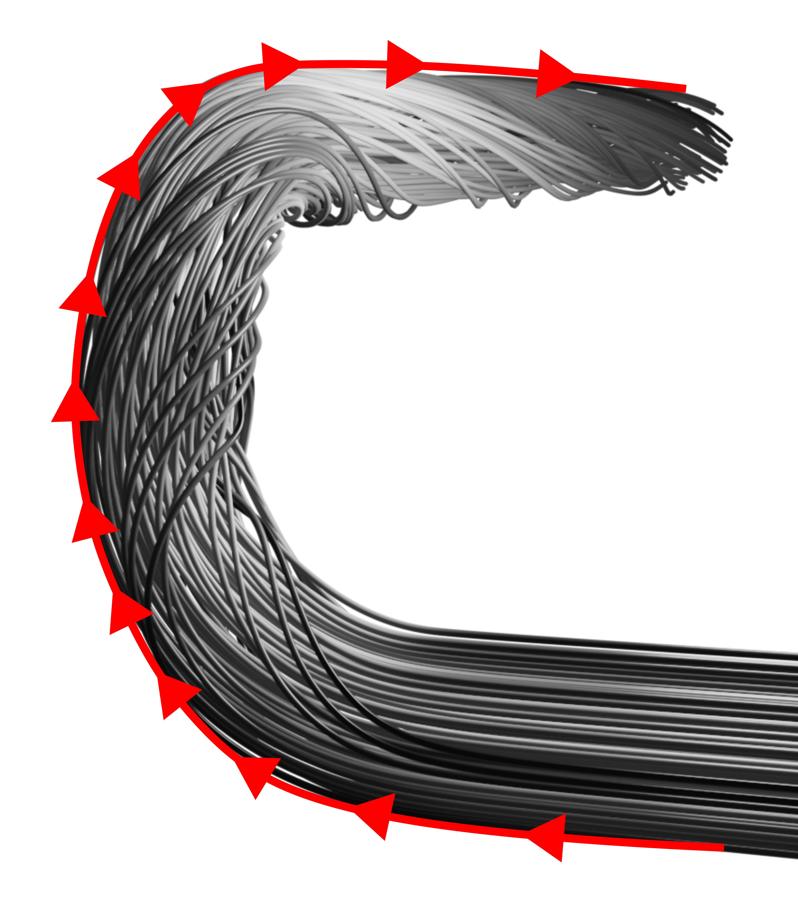
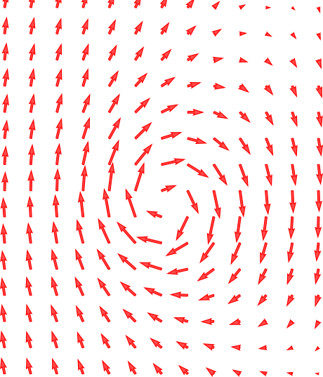
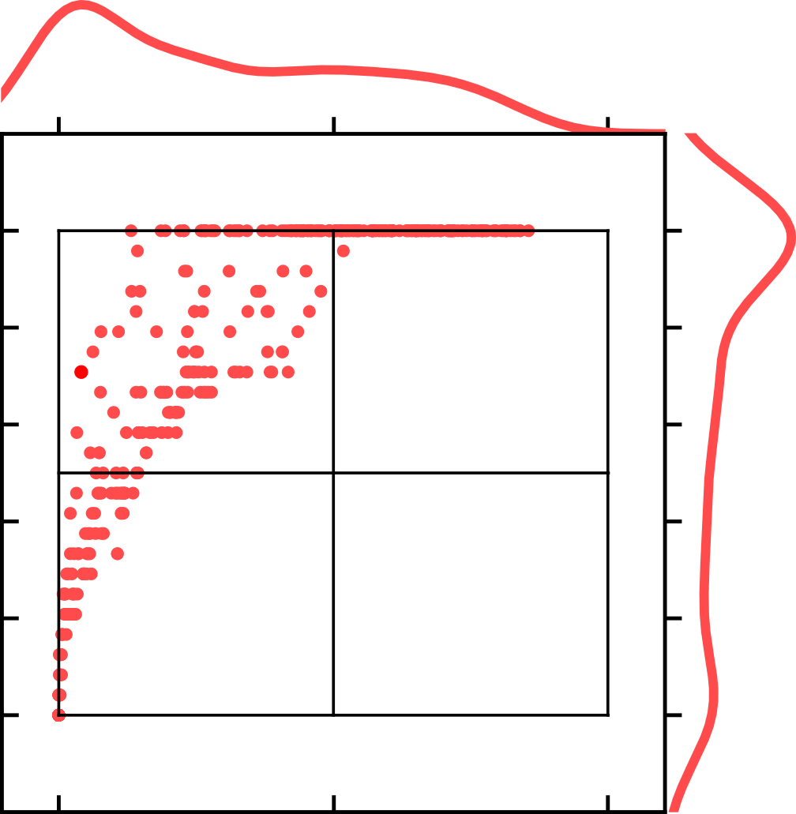
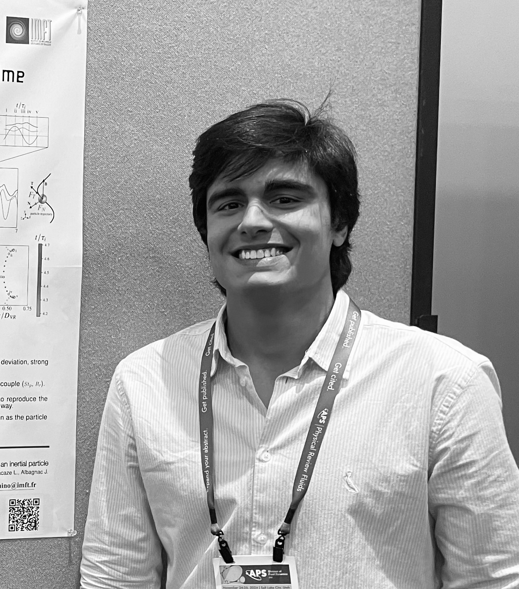

Fluid Dynamics Specialist
Connecting fundamental research to real world problems
Numerical Simulation. Experimental Analysis. Data Science.

My expertise
I apply advanced computational fluid dynamics to investigate complex flow phenomena, covering the full workflow from physical modeling and numerical setup to large-scale simulation campaigns and in-depth post-processing. My work combines commercial and open-source solvers, including Basilisk and OpenFOAM, with automated pipelines designed for high-throughput and parametric studies.
In parallel, I conduct experimental investigations to uncover the physical mechanisms governing fluid flows and to rigorously validate numerical results. I leverage statistical analysis and data-driven methods to quantify uncertainty, identify dominant trends, and extract robust insights from large datasets.



About
Hello — I'm Guilherme, a mechanical engineer with a strong background in fluid dynamics. I enjoy combining experiments, numerical simulations, and statistical analysis to better understand complex flows. Throughout my career, I have tackled various challenges, ranging from turbulent pipe flows to vortex-particle interactions and transitional stratified flows.
In addition to my fascination with the physical aspects of flow phenomena, I am passionate about applying this knowledge to practical problems. For instance, I have contributed to advancements in ultrasonic flow measurement, effectively bridging computational fluid dynamics with real-world applications.
I am currently completing my PhD at the Institut de Mécanique des Fluides de Toulouse and am eager to contribute to new scientific and engineering challenges where I can apply my expertise in fluid dynamics and data analysis to generate meaningful impact.
View my full CV here